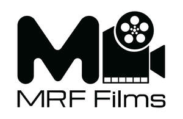

Trade Mark Journal No.2025/014 4 April 2025
UK00004178163 24 March 2025 (9,35,38,40,41)
Mark 1

Mark 2
- Class 9
- Motion picture films; Motion pictures; Prerecorded motion picture films; Pre-recorded motion picture films; Motion picture cameras; Motion picture projectors; Motion picture screens; Prerecorded motion picture videos; Photographic cameras for the instant production of pictures; Motion control software; Computer software to enhance the audio-visual capabilities of multimedia applications, namely, for the integration of text, audio, graphics, still images and moving pictures; Motion sensors; Film production apparatus; Digital picture frames; Picture transmission apparatus; Video conferencing equipment; Interactive video game programs; Video game programs; Software programs for video games; Apparatus for recording television programmes; Software development programmes; Pre-recorded motion picture films; Prerecorded motion picture films; Prerecorded motion picture videos; Motion picture films; Video cameras for broadcasting; Computer programs for editing images, sound and video; Motion picture cameras; Apparatus for recording television programmes; Video films; Motion picture screens; Motion picture projectors; Interactive video game programs; Video cameras; Digital video cameras; Video game programs .
- Class 35
- Advertising for motion picture films; Production of video recordings for publicity purposes; Video recordings for publicity purposes (Production of -); Video recordings for advertising purposes (Production of -); Video recordings for marketing purposes (Production of -); Production of video recordings for marketing purposes; Production of video recordings for advertising purposes; Production of visual advertising matter; Production of sound recordings for publicity purposes; Production of advertising material; Production of advertising films; Production of teleshopping programs; Production of commercials; Production of teleshopping programmes; Production of teleshopping programs; Production of television and radio advertisements; Production of television commercials; Production and distribution of radio and television commercials; Production of radio advertisements; Production of radio commercials; Production of cinema commercials; Employment management services for film television technicians; Advertising for motion picture films; Production of video recordings for advertising purposes; Video recordings for advertising purposes (Production of -); Production of video recordings for publicity purposes; Video recordings for publicity purposes (Production of -); Production of video recordings for marketing purposes; Video recordings for marketing purposes (Production of -); Producing promotional videotapes, video discs, and audio visual recordings .
- Class 38
- Broadcasting of motion picture films via the Internet; Broadcasting of motion pictures by television; Broadcasting of motion pictures by satellite; Video, audio and television streaming services; Television programme broadcasting; Broadcasting of television programmes; Broadcast of television programmes; Transmission of television programmes; Diffusion of television programmes; Radio and television programme broadcasting; Broadcasting of radio and television programmes; Transmission of radio and television programmes; Broadcasting of television programs; Broadcasting of cable television programmes; Broadcast of cable television programmes; Broadcasting of programmes by television; Radio programme broadcasting; Broadcast of radio programmes; Broadcasting and transmission of television programs; Transmission of television programs; Broadcasting of radio and television programs; Broadcasting of radio programmes; Broadcasting of teleshopping programmes; Radio and television program broadcasting; Television programme broadcasting via cable; Wireless transmission and broadcasting of television programmes; Transmission of radio and television programs; Broadcasting of cable television programs; Television broadcasting services; Broadcasting of television programs using video-on-demand and pay-per-view television services; Broadcasting of motion pictures by television; Broadcasting of motion picture films via the Internet; Video, audio and television streaming services; Video broadcasting; Broadcasting of motion pictures by satellite; Television programme broadcasting; Transmission of video films; Broadcast of television programmes; Broadcasting of video and audio programming over the Internet .
- Class 40
- Film development and reproduction of photographs; Rental of equipment for the treatment and transformation of materials, for energy production and for custom manufacturing; Photographic film development; Development (Photographic film -); Printing, and photographic and cinematographic development; Video tapes (Transfer of photographic film on to -); Transfer of photographic films on to video tape .
- Class 41
- Motion picture production; Production of motion pictures; Production of motion picture films; Motion picture film production; Services in the production of animated motion picture entertainment; Production of animated motion pictures; Motion picture song production; Motion picture studio services; Services in the production of animated motion pictures and television features; Motion picture studios; Motion picture (Rental of -); Motion picture rental; Rental of motion picture films; Motion picture theaters; Leasing of motion pictures; Rental of motion picture and television scenery; Leasing of motion picture cameras; Leasing of motion picture projectors; Showing of cinematographic and motion picture films; Rental of cinematographic and motion picture films; Entertainment services in the form of motion pictures; Rental of motion pictures; Motion pictures (Rental of -); Rental of video tapes and motion pictures; Rental of motion pictures and of sound recordings; Production of animation; Video production; Animation production services; Production of videos; Production of video films; Production of sporting events for film; Production of musical videos; Video production services; Video film production; Services for the production of entertainment in the form of video; Production of animated and live action programmes; Audio and video production, and photography; Production of entertainment in the form of video tapes; Services for the production of entertainment in the form of film; Film production for entertainment purposes; Film production services; Videotape production; Organization, production and presentation of theatrical performances; Production of movie special effects; Production of closed caption television programs; Production of video recordings; Production of roller-skating shows; Production of training videos; Operation of video and audio equipment for the production of radio and television programs; Audio, video and multimedia production, and photography; Organisation, production and presentation of theatrical performances; Production of theatrical shows; Production (Videotape film -); Videotape film production; Motion picture-rental services; Production of films on aspects of association football; Production of films for entertainment purposes; Film production for educational purposes; Production of film studies; Production of music shows; Production of educational sound and video recordings; Production of sporting events for television; Special effects animation services for film and video; Post-production editing services in the field of music, videos and film; Film production; Production of pre-recorded video films; Production of sporting events; Production of audio programs; Production of a continuous series of animated adventure shows; Production of entertainment in the form of sound recordings; Production of music; Music production; Production of entertainment in the form of television programmes; Production of audio entertainment; Production of training films; Production of television features; Video tape film production; Theatrical production services; Production of cinematographic films; Production of shows; Shows (Production of -); Production of television entertainment features; Shows and films production; Theater production services; Services for the production of entertainment in the form of television; Production of films for educational purposes; Show production services; Video and DVD film production; Production of films; Music production services; Video editing services for events; Production of sound and video recordings; Audio production; Production of stage shows; Consultancy on film and music production; Production of animated cartoons; Production of video cassettes; Production of entertainment in the form of a television series; Video tape production; Theater production; Production of audiovisual recordings; Production of special effects for films; Special effects (Production of -) for films; Theatre production services; Audio production services; Television production; Production of documentaries; Video production; Video production services; Production of videos; Production of video films; Production of musical videos; Audio and video production, and photography; Video film production; Services for the production of entertainment in the form of video; Production of entertainment in the form of video tapes; Production of video and audio recordings; Production of video tapes for corporate use in management educational training; Audio recording and production services; Production of video tapes and video discs; Animation production services; Production of audio tapes for entertainment purposes; Production of video tapes for corporate use in corporate educational training; Production of video discs for others; Services in the production of animated motion picture entertainment; Video recording services; Services in the production of animated motion pictures and television features; Entertainment services in the nature of video games; Audio tape production services; Audio, film, video and television recording services; Production of animation; Production of audio-visual recordings; Audio recording and production; Services for the production of entertainment in the form of film; Production of video and/or sound recordings; Recording, film, video and television studio services; Production of animated and live action programmes; Production of television programs; Video game entertainment services; Entertainment services for sharing audio and video recordings; Production of sporting events for film; Audio and video recording services; Video entertainment services; Audio and video editing services; Production and rental of educational and instructional materials; Production of podcasts; Sound recording and video entertainment services; Production of audio recordings; Film and video tape film production; Providing age ratings for television, movie, music, video and video game content; Production of educational television programmes; Production of television entertainment programmes; Television program production; Video game services; Studio services for the recording of videos; Recording studio services for videos; Production of television game shows; Provision of video recording studio services; Production and presentation of radio programmes; Rental services for audio and video equipment; Providing audio or video studio services; Production of live entertainment events; Production of music concerts; Production of live entertainment features; Live entertainment production services; Provision of video recording studio facilities; Production of radio programs; Video and audio rental services; Production of television programmes; Production of esports events for television; Entertainment services for matching users with audio and video recordings; Rental of facilities for the production of television programmes; Services for the showing of video recordings; Radio production services; Television programme production; Production of live television programmes for entertainment; Production of musical recordings; Services for the production of radio programmes; Production of basketball games and exhibitions; Production of theatrical performances; Production of musical works in a recording studio; Production of radio programmes and of television programmes; Production of radio programmes or of television programmes; Television and radio programme preparation and production; Production of radio and of television programmes; Television programmes (Production of radio and -); Production of radio and television programmes; Radio and television programmes (Production of -); Production of television or radio programmes; Production of television and radio programmes; Production of radio programmes; Radio programmes (Production of -); Production of live television programmes; Cable television programmes (Production of -); Production of radio and television shows and programmes; Production of live television programmes for education; Production of radio or television programs; Production of radio and television programs; Production of television and radio programs; Preparation of television programmes; Preparation of radio and television programmes; Development of formats for television programmes; Production of animated programmes for use on television and cable; Production of cable television programs; Presentation of television programmes; Editing of television programmes; Production of television and radio programming; Preparation of entertainment programmes for broadcasting; Scheduling of radio and television programmes; Entertainment services in the nature of interactive television programmes; Rental of television programmes; Television show production; News programme services for radio or television; Preparation of documentary programmes for broadcasting; Production of television films; Entertainment services in the nature of webcam television programmes; Television, radio and film production; Entertainment services in the form of television programmes; Preparation of radio programmes; Preparation of entertainment programmes for the cinema; Performance of radio programmes; Education services in the form of music television programmes; Production of television programs for broadcast on mobile devices; Radio entertainment production; Preparation of documentary programmes for the cinema; Production of sporting events for radio; Editing of radio programmes; Entertainment in the nature of on-going television programs in the field of variety; Preparation of news programmes for the cinema; Preparation of news programmes for broadcasting; Presentation of radio programmes; Production of special effects for television; Special effects (Production of -) for television; Production of radio broadcasts; Entertainment in the form of television programmes (Services providing -); Entertainment in the nature of ongoing television programs in the field of variety; Production of television and cinema films; Performance of musical programmes; Syndication of radio programmes; Television programming services; Television program syndication; Publication of books relating to television programmes; Facilities for the production of films (Provision of -); Provision of radio and television entertainment services; Education services provided by television programmes; Production of TV shows; Producing and conducting exercises for music classes and programmes; Provision of non-downloadable films and television programs via pay television; Television studio services; Motion picture film production; Production of motion picture films; Rental of motion picture and television scenery; Motion picture studio services; Production of animated motion pictures; Motion picture production; Rental of video tapes and motion pictures; Motion picture song production; Production of motion pictures; Rental of motion picture films; Rental of cinematographic and motion picture films; Motion picture studios; Showing of cinematographic and motion picture films; Leasing of motion picture cameras; Exhibition of video film sound tracks; Exhibition of video films; Entertainment services in the form of motion pictures; Video editing; Editing of video recordings; Motion picture (Rental of -); Motion picture rental; Recording studio services for television; Motion picture theaters; Leasing of motion picture projectors; Digital video, audio and multimedia entertainment publishing services; Rental of pre-recorded films in the form of video tapes .
MRF FILMS LTD
Representative: Tina Eapen